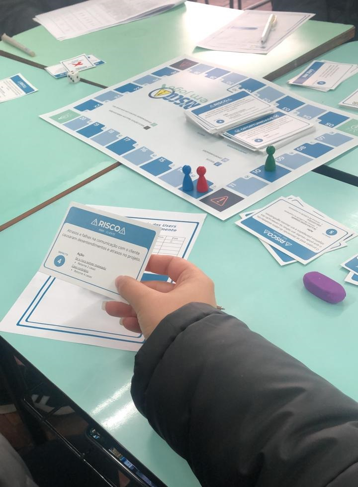
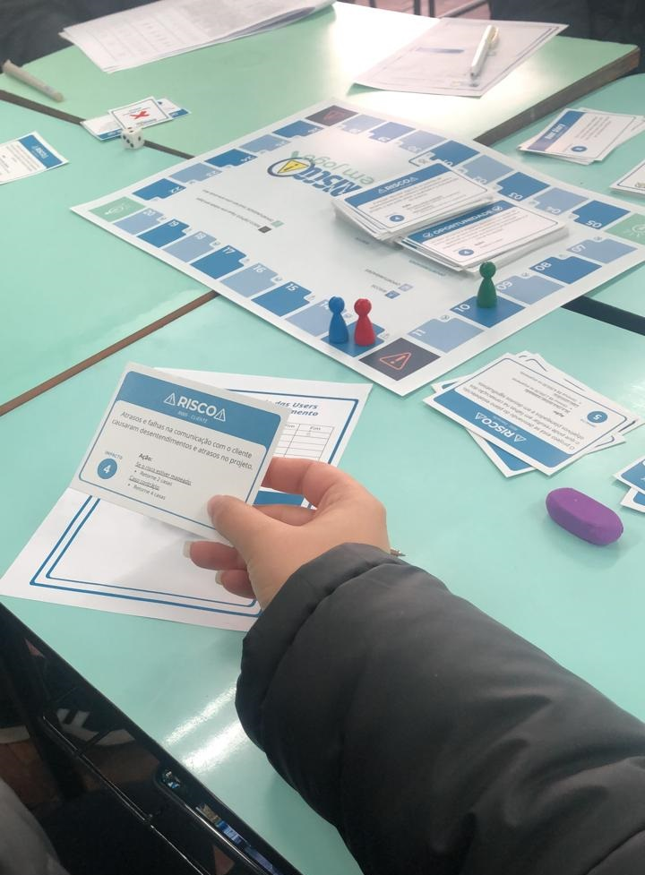
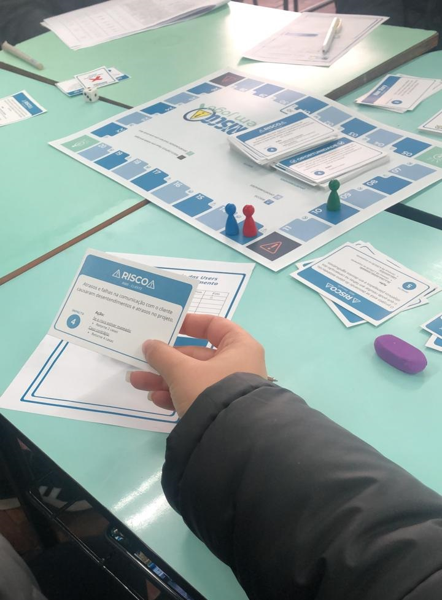
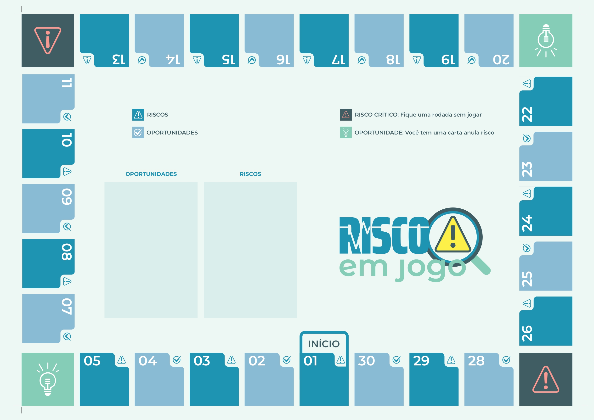
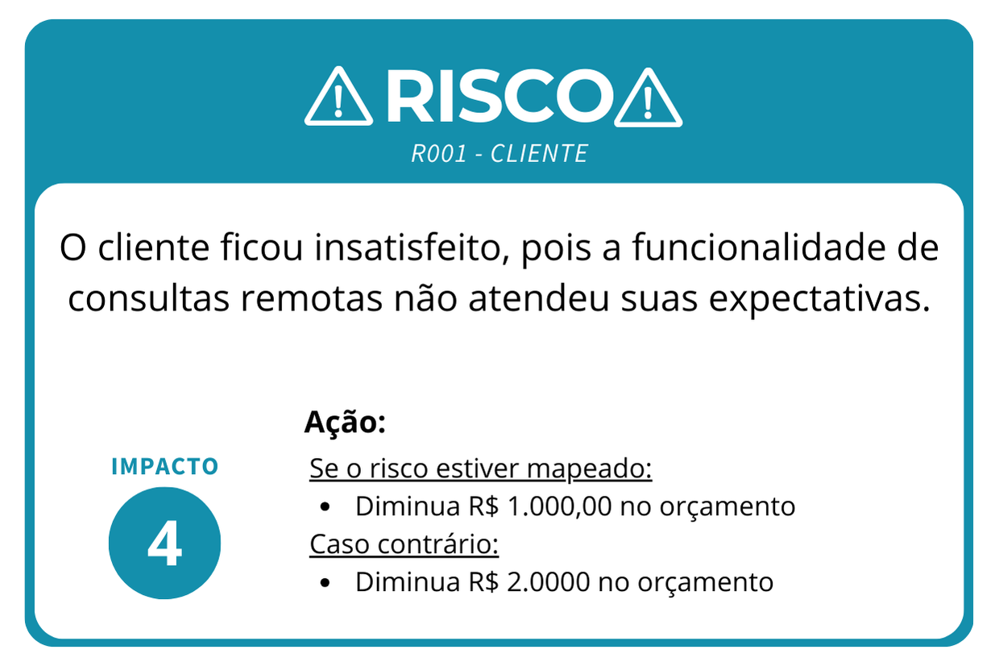
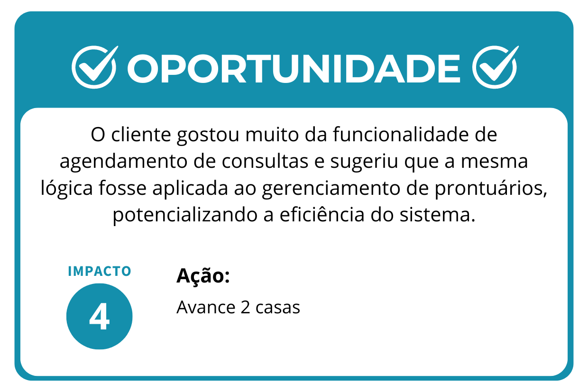
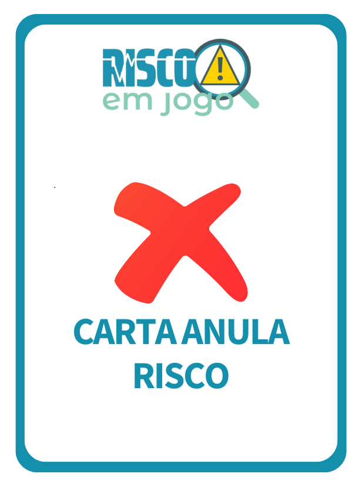
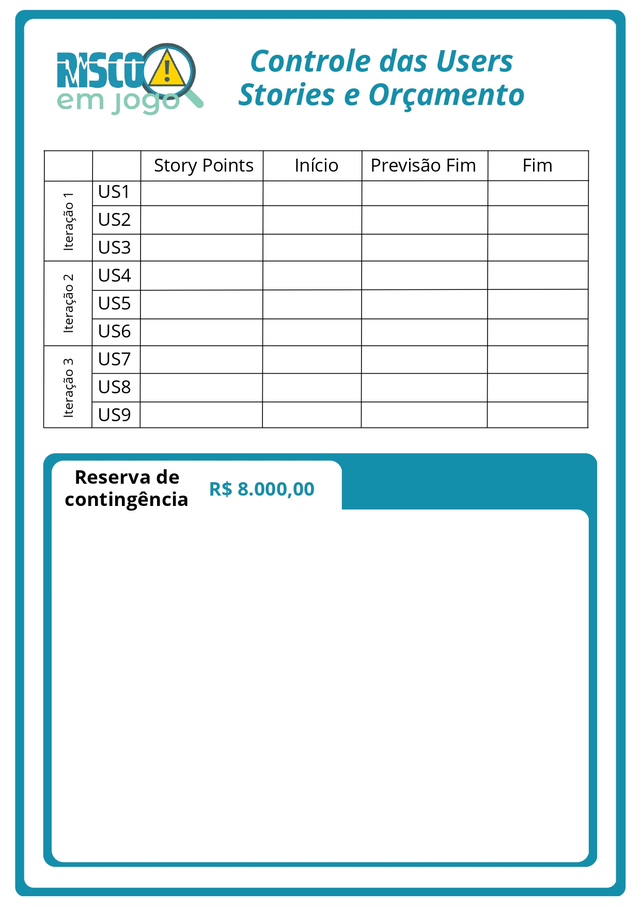

Risco em Jogo
Bem-vindo ao site do jogo educacional Risco em Jogo!
Aqui você encontrará todas as informações sobre o projeto, o material disponível e como entrar em contato.
 


Bem-vindo ao site do jogo educacional Risco em Jogo!
Aqui você encontrará todas as informações sobre o projeto, o material disponível e como entrar em contato.

O jogo Risco em Jogo foi concebido como parte do Trabalho de Conclusão de Curso da aluna Virgínia Moreira Marques Colares, estudante de Sistemas de Informação na Universidade Federal de Santa Maria (UFSM), sob a orientação da professora Lisandra Manzoni Fontoura. O desenvolvimento do jogo passou por diversas etapas. Inicialmente, foi realizada uma revisão da literatura para embasar o projeto, explorando conceitos e teorias relevantes no gerenciamento de riscos em projetos de software.
Em seguida, o jogo foi desenvolvido utilizando o processo ENGaGED (EducatioNAl GamEs Development), um método estruturado para o desenvolvimento de jogos educacionais que integra princípios pedagógicos com práticas de design de jogos. O ENGaGED foi escolhido para garantir que o jogo não apenas fosse educativo, mas também engajante e eficaz na transmissão de conhecimento sobre gerenciamento de riscos.
Posteriormente, o jogo foi aplicado em ambiente de sala de aula, onde foi testado e avaliado pelos participantes. Para a avaliação, foi utilizado o método MEEGA+ (Method for Evaluating Educational Games), um método de avaliação que considera múltiplas dimensões, como engajamento, eficácia educacional e adequação pedagógica. O MEEGA+ foi crucial para entender como o jogo contribuiu para o aprendizado dos estudantes e identificar áreas de melhoria.
Essas etapas não apenas permitiram o desenvolvimento de um jogo educacional alinhado com as melhores práticas em educação e desenvolvimento de jogos, mas também proporcionaram insights valiosos sobre a aplicação prática de conceitos teóricos em um contexto educacional dinâmico.
O tabuleiro do jogo Risco em Jogo foi impresso em folha A3 de 240g, proporcionando uma base sólida e durável para a experiência de jogo. Ele é dividido em 30 casas, incluindo 15 casas de risco, 15 casas de oportunidades e 4 casas especiais, todas projetadas para representar visualmente os desafios e oportunidades encontrados em projetos de software.
Os peões utilizados no jogo são feitos de material plástico, proporcionando uma maior facilidade de movimentação pelos jogadores ao longo do tabuleiro. Cada peão representa o andamento do projeto de software, sendo visualmente distintos para cada jogador. Já o dado do jogo é de seis lados e foi escolhido por adicionar um elemento de sorte e decisão estratégica, essencial para a dinâmica do jogo.
O manual do Risco em Jogo foi impresso em formato livreto em folha A4 comum, frente e verso, para facilitar a consulta e compreensão das regras e mecânicas pelos jogadores. Contém informações detalhadas sobre como jogar, regras específicas, objetivos e orientações gerais para uma experiência fluida. O manual do jogo pode ser conferido no Apêndice B.
O manual do jogo estará disponível para download mais abaixo.
As 60 cartas de risco foram impressas em folhas A4 de 240g, com 8 cartas por folha, oferecendo detalhes sobre diferentes tipos de riscos encontrados em projetos de software. Cada carta apresenta informações como ID do risco, categoria, descrição, impacto e ação recomendada para gerenciamento.
As 30 cartas de oportunidade foram impressas em folhas A4 de 240g, com 8 cartas por folha, destacando oportunidades positivas que podem impactar positivamente o progresso do projeto de software. Cada carta descreve uma oportunidade específica com detalhes sobre o impacto e a ação sugerida para aproveitá-la.
As 9 cartas de User Stories foram impressas em folhas A4 de 240g, distribuídas em uma folha com 8 cartas e outra folha com 1 carta restante. Cada carta detalha uma tarefa essencial para completar o projeto de software, incluindo informações como ID da US, número de iteração no qual ela pertence, descrição da tarefa e número de Story Points associados.

As 14 cartas de Anula Risco foram impressas no espaço restante das folhas das User Stories em folhas A4 de 240g. Cada carta oferece a possibilidade de anular a ação de um risco específico durante o jogo, proporcionando uma estratégia adicional para os jogadores lidarem com os desafios.
O documento contendo 2 tabelas por folha foi impresso em folhas A4 e serve para que os jogadores façam o controle das User Stories e do orçamento do projeto de software. Cada tabela permite monitorar o progresso das histórias de usuário e gerenciar os recursos disponíveis conforme o jogo avança.
A lista de riscos é apresentada em forma de tabela distribuída em 6 folhas impressas em folhas A4 comum. Ela detalha todos os riscos possíveis no contexto do projeto de software, incluindo informações como ID do risco, contexto, descrição, probabilidade, impacto, categoria e ação recomendada para cada um.
A lista de riscos disponível para download mais abaixo.
Para mais informações, entre em contato com a desenvolvedora:
Aluna: Virgínia Colares
Email: vmcolares@inf.ufsm.br
Orientadora: Lisandra Manzoni Fontoura
Aqui você pode baixar todo o material necessário para jogar "Risco em Jogo":
Materiais do Jogo